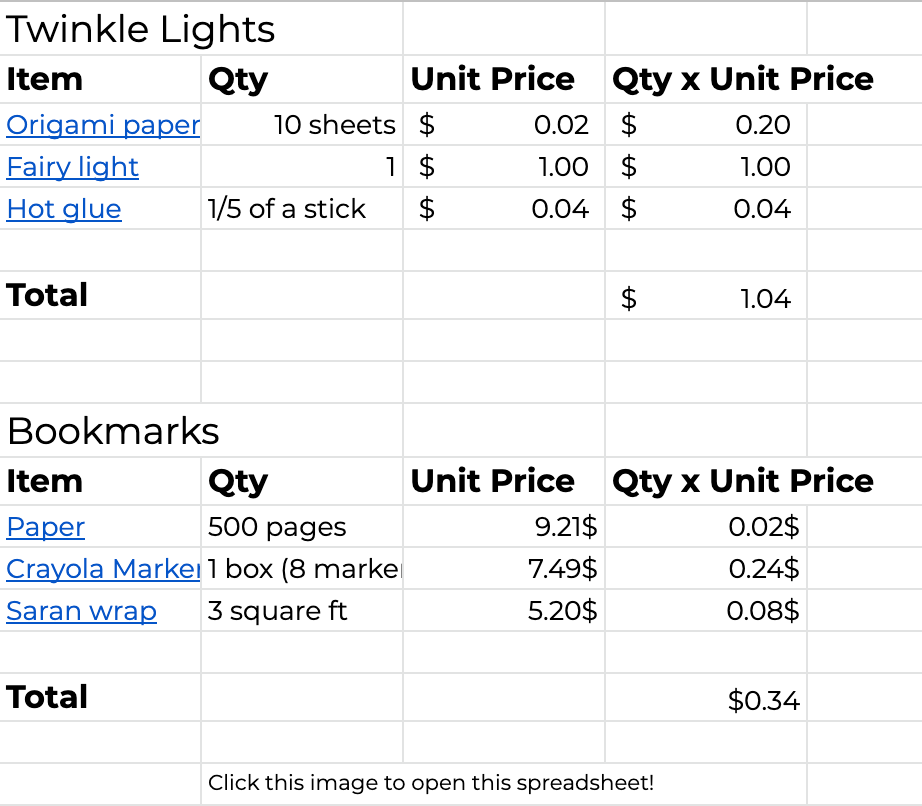

- Fantastical Fable Extensions
We are making Fable-Holders and Twinkle Lights. Fable-Holders are bookmarks, and Twinkle Lights are paper creations on fairy lights.
Our products are colorful and uniquely shaped laminated bookmarks. There are many different types of fable-holders to match the story. These bookmarks help keep your book in good condition, and they help keep your book pages straight. Fable-Holders come in different designs and colors.
Twinkle Lights are origami creations strung on fairy lights. They provide calming ambient light, perfect for a bedroom or study. Twinkle Lights are around 3'3 ft long and come in different colors and designs.
We are planning to sell the Twinkle Lights for 10-12 dollars and the Fable-Holders for around 3 dollars. There would be 10 of each of the three Twinkle Light designs, and also 10 of each of the three Fable-Holder designs. (So thirty Twinklies and thirty Fable-Holders.)